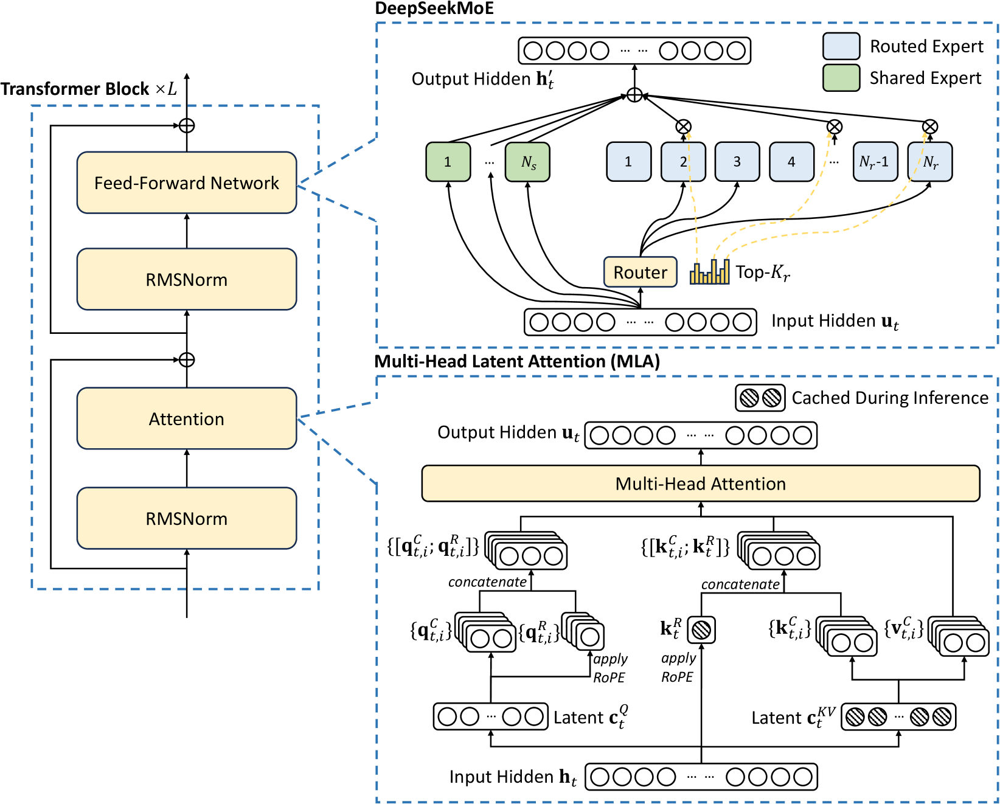
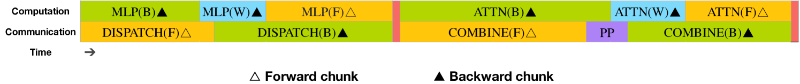
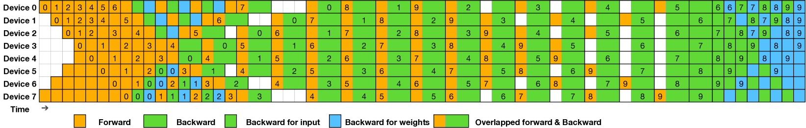
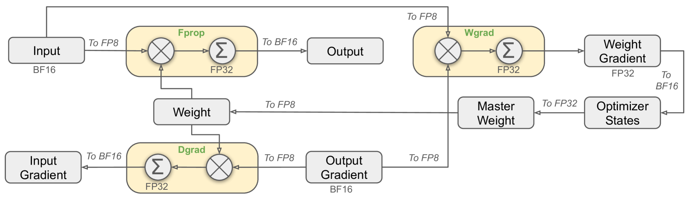

DualPipe — a bidirectional pipeline parallelism algorithm achieving full computation-communication overlap for cross-node MoE training, enabling 671B parameter model training at only $5.576M cost.
Q1: 核心痛点？
MoE 大模型跨节点训练时，expert parallelism 的 all-to-all 通信开销巨大（计算:通信 ≈ 1:1），传统 pipeline 方法 bubble 大且无法隐藏通信。
Q2: 杀手锏方法？
DualPipe — 将 forward/backward chunk 拆为 attention/dispatch/MLP/combine 四个细粒度组件，双向调度 micro-batch，让 forward 的通信与 backward 的计算完全重叠，反之亦然。SM 资源通过 warp specialization 动态分配给通信和计算。
Q3: 效果？
背景: DeepSeek-V3 用 256 routed experts + 64-way EP 横跨 8 节点。IB 带宽（50GB/s）远低于 NVLink（160GB/s），每个 token 的 all-to-all 通信时间几乎等于计算时间。1F1B 和 ZeroBubble 无法有效隐藏这个通信开销。
破局: 核心直觉 — 像双向车道一样从 pipeline 两端同时注入 micro-batch，在"会车点"把一个方向的通信和另一个方向的计算重叠。具体做法是把每个 chunk 拆成可独立调度的细粒度组件，对 forward+backward chunk 配对交错排列。
拆解:
1. 拆分：每个 chunk → attention / all-to-all dispatch / MLP / all-to-all combine
2. 配对：forward chunk 的通信 与 backward chunk 的计算 交错重叠
3. 双向：从 pipeline 两端同时注入，正反对称，中间汇合
4. SM 分配：20 SM 给通信（warp specialization），剩余 SM 做计算
DeepSeek-V3 is a 671B MoE model (37B active/token) using MLA + DeepSeekMoE architecture. Key infra innovations: DualPipe for pipeline parallelism with full compute-comm overlap, FP8 mixed precision training at scale, custom IB+NVLink all-to-all kernels, and memory optimizations eliminating tensor parallelism. Pre-trained on 14.8T tokens for $5.576M, matching GPT-4o/Claude-3.5-Sonnet.




| Stage | H800 GPU Hours | USD |
|---|---|---|
| Pre-Training | 2,664K | $5.328M |
| Context Extension | 119K | $0.238M |
| Post-Training | 5K | $0.01M |
| **Total** | **2,788K** | **$5.576M** |
Takeaway: 全部训练仅花费 $5.576M（H800 $2/GPU-hour），其中预训练占 95.6%，每万亿 token 仅需 180K GPU 小时。
| Method | Bubble | Parameter Memory | Activation Memory |
|---|---|---|---|
| 1F1B | (PP-1)(F+B) | 1× | PP |
| ZB1P | (PP-1)(F+B-2W) | 1× | PP |
| **DualPipe (Ours)** | **(PP/2-1)(F&B+B-3W)** | 2× | PP+1 |
Takeaway: DualPipe 的 bubble 公式中系数从 PP-1 降到 PP/2-1，在 16-PP 时 bubble 减少约 60%+。代价是 2× 参数内存，但在大 EP 下影响可忽略。
| Params | 671B total, 37B active | Layers | 61 |
|---|---|---|---|
| Hidden | 7168 | Heads | 128 |
| KV compress dim | 512 | Routed experts | 256 |
| Shared experts | 1 | Active experts | 8 |
| Vocab | 129,280 | Context | 128K |
Takeaway: 671B 总参数中每 token 仅激活 37B（5.5%），MLA 将 KV cache 压缩到 512 维，推理显存极低。
1. 跨节点 all-to-all kernel: 每 token 最多发 4 节点，IB 先发到同编号 GPU，NVLink 转发到目标 GPU。20 SM 分 10 channel，dispatch 和 combine 各有 3 种 warp（IB send / IB-NVLink forward / NVLink recv），动态调整 warp 数量。
2. 内存优化: DualPipe 首尾 stage 同 rank 部署 → embedding/output head 物理共享；RMSNorm/MLA recomputation；FP8 存储激活值 → 完全避免 TP。
DualPipe 通过双向 pipeline + 细粒度计算-通信重叠，将 MoE 跨节点 all-to-all 通信完全隐藏，以不到 560 万美元训出与 GPT-4o 可比的 671B 模型。
Primary goal: 大规模 MoE LLM 的预训练（pre-training）为核心，兼顾推理部署（inference deployment）。训练系统占全文 Section 3 的绝大部分篇幅，推理部署在 §3.4 有独立描述但深度明显不足。
Scale target: 分布式，2048 H800 GPU（256 节点 × 8 GPU/节点）。16-way PP 跨 2 个节点（每 PP stage = 8 GPU = 1 节点），64-way EP 跨 8 节点，ZeRO-1 DP 在 EP group 内。总计 2048 GPU 的集群，全 IB 互联 + 节点内 NVLink/NVSwitch。
Online or offline: 训练是离线批处理；推理部署同时覆盖 online serving（prefill/decode 分离，有 SLO 约束）和 offline batch。
Workload: MoE LLM training — 671B total params, 37B active/token, 256 routed experts + 1 shared expert, 61 layers, 4K→128K context length。这是目前公开报道的最大规模 FP8 MoE 训练。
批判性评论: 论文标题是"Technical Report"而非"System Paper"，但 §3 的系统设计深度足以成为一篇独立的系统论文。然而，推理部署（§3.4）的细节远不如训练充分 — 缺少 latency/throughput 数据、没有 prefill 与 decode 的 SLO 数字、IBGDA 的效果未量化。这暗示推理系统在发表时可能尚未完全优化。
---
#### System Component Diagram
┌──────────────────────────────────────────────────────────────┐
│ HAI-LLM Framework │
│ │
│ ┌─────────┐ ┌──────────┐ ┌──────────┐ ┌──────────────┐ │
│ │ Data │ │ Pipeline │ │ Expert │ │ FP8 Mixed │ │
│ │ Pipeline │→│ Parallel │→│ Parallel │→│ Precision │ │
│ │ (ZeRO-1) │ │ (DualPipe│ │ (64-way │ │ Framework │ │
│ │ │ │ 16-way) │ │ EP) │ │ │ │
│ └─────────┘ └──────────┘ └──────────┘ └──────────────┘ │
│ │ │ │ │ │
│ ┌─────────────────────────────────────────────────────────┐ │
│ │ Custom All-to-All Communication Kernels │ │
│ │ IB (50GB/s) + NVLink (160GB/s) co-optimized │ │
│ └─────────────────────────────────────────────────────────┘ │
│ │ │ │ │ │
│ ┌─────────┐ ┌──────────┐ ┌──────────┐ ┌──────────────┐ │
│ │ H800 │ │ NVLink │ │ IB │ │ CPU (EMA, │ │
│ │ GPU×2048│ │ NVSwitch │ │ Network │ │ Optimizer) │ │
│ └─────────┘ └──────────┘ └──────────┘ └──────────────┘ │
└──────────────────────────────────────────────────────────────┘
Control plane vs Data plane:
State management:
Failure handling: 论文完全未提及 fault tolerance、checkpoint、或 failure recovery。2788K GPU-hours 的训练（约 57 天×2048 GPU），零 loss spike 零 rollback — 这要么说明硬件和软件极其稳定，要么说明他们有 checkpoint 机制但没写。考虑到 H800 集群的规模，这是论文的一个显著遗漏。
---
#### 2a. End-to-End Data Flow Diagram
Training forward pass — 单个 micro-batch 在单层 MoE Transformer block 的数据流:
| Stage | Input → Output | Location | Data Format & Size |
|---|---|---|---|
| 1. Token Embedding | Token IDs → Hidden states | GPU HBM | int32 → BF16, [B×4K, 7168] |
| 2. RMSNorm | h → norm(h) | GPU (recompute in bwd) | BF16, [B×4K, 7168]，不存输出 |
| 3. MLA Q/K/V compress | h → c_Q, c_KV, k_R | GPU | BF16→FP8 存储, c_KV=[B×4K, 512] |
| 4. Attention compute | Q, K, V → attn_out | GPU Tensor Cores | BF16 (保留高精度) |
| 5. MLA output proj | attn_out → u | GPU | BF16, [B×4K, 7168] |
| 6. RMSNorm | u → norm(u) | GPU (recompute in bwd) | BF16 |
| 7. MoE Gate (Sigmoid + TopK) | u → routing decisions | GPU | BF16→routing table |
| 8. All-to-All Dispatch | Token features → target GPUs | GPU→NIC→IB→NIC→GPU | FP8, 每 token 发往 ≤4 nodes |
| 9. Expert FFN (MLP) | dispatched tokens → expert output | GPU Tensor Cores | FP8 GEMM (E4M3), accum FP32 |
| 10. All-to-All Combine | expert outputs → source GPUs | GPU→NIC→IB→NIC→GPU | BF16 (combine 保持高精度) |
| 11. Residual Add | u + MoE_out → h' | GPU | BF16 |
| 12. MTP Module (depth=1) | h' → next-token prediction | GPU | 共享 embedding/output head |
Backward pass: 分为 B_input (Dgrad) 和 B_weight (Wgrad)。Wgrad 从 FP8 存储的激活值读取，Dgrad 对 attention 后的 linear 输入使用 E5M6 自定义格式。
---
#### 2b. Data Movement Hotspots
TOP 3 数据搬运瓶颈:
| Rank | Bottleneck | What Data | How Much | From→To | Frequency | Overlapped? |
|---|---|---|---|---|---|---|
| **#1** | **Cross-node All-to-All (MoE dispatch/combine)** | Token hidden states | 每 token 7168 dim × FP8 = ~7KB，每层 2× dispatch+combine，61 MoE layers，batch_size up to 15360 | GPU→IB(50GB/s)→GPU→NVLink(160GB/s)→GPU | 每 micro-batch 每 MoE layer 2 次 | **是，DualPipe 的核心创新就是把这个完全隐藏** |
| **#2** | **PP 跨节点 Activation/Gradient 传递** | 层间 hidden states | [micro_batch_size, seq_len, 7168] BF16 ≈ 数百 MB/次 | PP stage N 的 GPU → PP stage N+1 的 GPU（跨节点 IB） | 每 micro-batch 每 PP boundary 1 次 forward + 1 次 backward | **是，与 all-to-all 一起被 DualPipe 隐藏** |
| **#3** | **FP8 Quantization/Dequantization 带来的 HBM 读写** | Activations, weights | 每个 Linear 需要: 读 BF16 → 量化 → 写 FP8 → 读 FP8 → GEMM → 写 BF16 | GPU HBM ↔ GPU SRAM (L2/shared mem) | 每个 GEMM 前后 | **部分 — online quantization 需要额外读写，论文在 §3.5.3 明确指出这是瓶颈，建议未来硬件融合 FP8 cast 和 TMA** |
批判性分析: 论文声称"near-zero all-to-all communication overhead"，但这只在 compute:comm ≈ 1:1 时成立。如果 expert 更细粒度（e.g. 512 experts），compute 更少而 comm 不变，overlap 就会破裂。论文没有测量当 compute:comm 比率变化时的 degradation curve。
---
| Innovation | Mechanism | Benefit | Cost/Tradeoff |
|---|---|---|---|
| **DualPipe** | 双向 pipeline scheduling + 细粒度组件（attention/dispatch/MLP/combine）交错排列，forward 的 comm 与 backward 的 compute 重叠 | Pipeline bubble 从 (PP-1)(F+B) 降到 (PP/2-1)(F&B+B-3W)，约减少 60%+；all-to-all 和 PP comm 完全隐藏 | **2× 模型参数内存**（首尾 PP rank 各存一份完整模型）；要求 PP stages 和 micro-batches 均能被 2 整除；调度逻辑复杂度显著增加 |
| **Custom All-to-All Kernels** | 20 SM 分 10 channel，warp specialization 区分 IB send / IB-NVLink forward / NVLink recv 三种角色，动态调整 warp 分配；PTX 手写指令 | 充分利用 IB 50GB/s + NVLink 160GB/s 异构带宽；只占 20/132 SM（15%）；支持每 token 最多 4 节点、平均 3.2 experts/node | **高度耦合 H800 拓扑**（NVLink 8-GPU + IB 互联），换其他硬件需要完全重写；PTX 级别优化无法跨架构移植 |
| **FP8 Mixed Precision Training** | Tile-wise (1×128) activation quantization + Block-wise (128×128) weight quantization + E4M3 all tensors + 每 128 元素 promote to CUDA Core FP32 累加 + online quantization | 理论 2× 计算加速 + 显存节省（激活值 FP8 存储）；671B 规模验证 relative loss error < 0.25% | **H800 Tensor Core 的 FP8 累加精度只有 14-bit**，必须每 128 元素手动 promote 到 CUDA Core — 这降低了 WGMMA 发射率；不支持 block-wise activation quantization（Dgrad 对精度敏感，会 diverge） |
| **Memory Optimization** | RMSNorm/MLA up-proj recompute；EMA 异步存 CPU；DualPipe 首尾同 rank 物理共享 embedding/output head；FP8 activation 存储 | **完全避免 Tensor Parallelism**，减少 TP 通信开销和实现复杂度 | Recomputation 增加约 5-10% 额外计算；首尾同 rank 部署约束了 PP stage 分配灵活性 |
| **Auxiliary-Loss-Free Balancing** | 每 expert 维护一个 bias term b_i，仅用于 routing decision 不用于 gating value；每 step 末根据 expert load 动态 ±γ 调整 | 消除 auxiliary loss 对模型性能的损害；实现 batch-wise balancing（而非 sequence-wise），允许 expert 跨 domain 更好地 specialize | **推理时的 domain shift 可能导致 load imbalance** — 论文承认了这个问题并用 redundant expert deployment 缓解，但没有量化 imbalance 的程度 |
---
Batch formation strategy:
Memory management:
GPU 利用率与 Bubble 消除:
PP/EP/DP 并行策略:
SM allocation:
---
| Scenario | Workload Pattern | SLO/Goal | Why Existing Systems Fail |
|---|---|---|---|
| 大规模 MoE 预训练 (primary) | 671B params, 14.8T tokens, 4K seq, batch 15360, 61 layers × (attention + 256-expert MoE) | ≤$5.576M 总成本；零 loss spike；180K GPU-hours/T tokens | 1F1B pipeline bubble 太大；EP 的 all-to-all 通信 ≈ 计算时间（1:1 ratio），传统方法无法隐藏；TP 带来大量冗余通信且增加内存 |
| 长上下文训练 (secondary) | 32K→128K context extension, 2×1000 steps | 保持 NIAH 性能 | YaRN 需要的额外计算与通信在 DualPipe 框架内无缝扩展 |
| 在线推理 serving (tertiary) | Prefill: TP4+SP+EP32+DP8, 4 节点 32 GPU；Decode: TP4+SP+EP320+DP80, 40 节点 320 GPU | >2× DeepSeek-V2 速度；SLO 未明确给出 | 标准 EP 部署下 expert load imbalance → redundant expert deployment |
Primary bottleneck: 通信（cross-node all-to-all）。论文反复强调 compute:communication ≈ 1:1 是核心痛点。在 DualPipe 成功隐藏通信后，瓶颈转移为 pipeline bubble（但已被大幅缩小）和 FP8 GEMM 精度/效率。
批判性评论: 论文没有给出 roofline analysis 或 MFU (Model FLOPs Utilization) 数字。我们只知道 180K GPU-hours/T tokens，但不知道这对应多少 MFU。按 H800 ~990 TFLOPS FP8 粗算: 14.8T tokens × ~7.5B active FLOPs/token × 6（forward+backward）≈ 6.66e20 FLOPs，2.664M GPU-hours × 3600s × 990e12 = 9.49e24 可用 FLOPs，MFU ≈ 6.66e20 / 9.49e24 ≈ 很低... 但这个计算可能有误因为 MoE 的 FLOP 计算复杂。论文刻意回避了 MFU 这个关键指标。
---
#### 6a. Metrics Definition
| Metric | Definition | Unit | Higher/Lower is Better |
|---|---|---|---|
| Pipeline Bubble | 空闲时间占比，用 (idle time units) 的公式表示 | Time units (F, B, W) | Lower |
| Parameter Memory | 存储模型参数所需的副本数 | ×（倍数） | Lower |
| Activation Memory | pipeline 中需要同时保持的 activation 数量 | PP stages | Lower |
| Training Cost | 完成全部训练所需的 GPU 小时数和美元 | GPU-hours, USD | Lower |
| Relative Loss Error | FP8 vs BF16 训练的 loss 相对误差 | % | Lower |
| MTP Acceptance Rate | Speculative decoding 时第二个 token 被接受的比率 | % | Higher |
| TPS | 推理时每秒生成的 token 数 | Tokens/s | Higher |
#### 6b. Before-After Comparison Table
| Optimization | Metric | Baseline Value | After Optimization | Improvement | Conditions |
|---|---|---|---|---|---|
| DualPipe vs 1F1B | Pipeline Bubble | (PP-1)(F+B) = 15(F+B) | (PP/2-1)(F&B+B-3W) = 7(F&B+B-3W) | **~60%+ reduction** (paper claim) | PP=16, 20 micro-batches |
| DualPipe vs ZB1P | Pipeline Bubble | (PP-1)(F+B-2W) = 15(F+B-2W) | (PP/2-1)(F&B+B-3W) = 7(F&B+B-3W) | **显著减少**（系数从 15 降到 7 + F&B < F+B） | PP=16 |
| DualPipe comm overlap | All-to-All visibility | 完全暴露（1:1 compute:comm ratio） | **完全隐藏** | ~2× effective throughput | Compute:comm ≈ 1:1 |
| FP8 vs BF16 | Relative Loss Error | 0% (BF16 baseline) | < 0.25% | **Negligible quality loss** | 16B model on 1.33T tokens; 230B model on 0.9T tokens |
| FP8 vs BF16 | Compute Speed | 1× (BF16) | **理论 2×** (实际未给出) | 未量化 | H800 FP8 Tensor Core |
| Aux-loss-free vs Aux-loss | Validation Loss (1B MoE) | 2.258 | 2.253 | **-0.005 loss** | 1B MoE model |
| Aux-loss-free vs Aux-loss | Validation Loss (3B MoE) | 2.085 | 2.080 | **-0.005 loss** | 3B MoE model |
| MTP (D=1) vs Baseline | HumanEval (Large MoE) | 44.5% | 53.7% | **+9.2%** | 228.7B MoE, 540B tokens |
| MTP Speculative Decoding | TPS | 1× baseline | **1.8× TPS** | +80% decoding speed | 85-90% acceptance rate |
| No TP vs with TP | TP Communication | TP comm overhead > 0 | **0 (eliminated)** | ~15-20% comm saving (estimated) | Memory optimization enables this |
#### 6c. Bottleneck Shift Analysis
1. Before DualPipe: 瓶颈是 all-to-all 通信 — compute:comm ≈ 1:1，GPU 几乎一半时间在等通信
2. After DualPipe: 通信被隐藏，瓶颈转移为 pipeline bubble — 但 DualPipe 本身已将 bubble 减少 60%+
3. After FP8: compute 进一步加速（理论 2×），但 FP8 GEMM 精度问题成为新的隐忧 — H800 的 14-bit 累加精度需要频繁 promote to CUDA Core
4. After memory optimization (no TP): 内存不再是瓶颈，但 scaling 受限 — 如果模型更大（e.g. 2T params），可能又需要 TP
5. 在推理阶段: 瓶颈转移为 expert load imbalance 和 memory access（decode 阶段 batch size 小，bottleneck 是 HBM bandwidth 而非 compute）
#### 6d. Baselines & Fairness
公平性问题:
1. DualPipe vs 1F1B/ZB1P: 比较是公平的 bubble 公式对比，但论文只给了公式没给实测数字。实际 wall-clock time 的差异可能因为 DualPipe 的 F&B overlap 质量、SM allocation、内存带宽竞争等因素而不同。
2. FP8 vs BF16: 比较在 16B 和 230B 模型上进行，但不是在 671B 目标模型上做 A/B test — 论文假设小规模验证可以外推到 671B。这是合理但未经证明的。
3. Aux-loss-free vs Aux-loss: 在 1B 和 3B 模型上验证，但 auxiliary loss 的系数选择（baseline 用 DeepSeek-V2 的设置）是否是最优的？可能存在更好的 aux loss 系数使得差距缩小。
4. 缺失的关键对比: 没有与 Megatron-LM 或 DeepSpeed 的直接 head-to-head throughput 对比。我们无法知道 HAI-LLM + DualPipe 相对于 Megatron-LM + interleaved 1F1B 的实际 MFU 差异。
5. Baseline 可能赢的场景: 当 PP stages 很少（e.g. PP=2）时，DualPipe 的 2× 参数内存代价高但 bubble 减少有限；当 compute:comm >> 1（通信不是瓶颈）时，DualPipe 的 overlap 优势不明显；当 micro-batch 数不能被 2 整除时，DualPipe 不适用。
---
Framework: HAI-LLM — DeepSeek 内部自研的轻量级训练框架，"crafted by our engineers from the ground up"。未开源，外部无法复现。
Open source status:
Deployment requirements:
批判性评论: HAI-LLM 不开源是 DeepSeek 的核心竞争壁垒。DualPipe 算法本身可以复现，但 all-to-all kernel、FP8 框架、memory optimization 的完整工程组合才是真正的 know-how。论文给出了足够的算法描述但不够的工程细节 — 例如 warp specialization 的具体 warp 数量分配策略、PTX 指令选择、L2 cache 干扰的量化等。
---
| Layer | Impact |
|---|---|
| **Algorithm** | Auxiliary-loss-free load balancing (dynamic bias) — 可泛化到任意 MoE 模型，消除 balance loss 对模型质量的损害；MTP objective — 训练信号加密但推理时可丢弃或用于 speculative decoding |
| **Kernel** | 跨节点 all-to-all kernel with warp specialization + PTX — 为 IB+NVLink 异构拓扑定制的通信内核，dynamic SM allocation (20 SM/132)，NVLink 做 IB→GPU 的二级转发；FP8 GEMM with per-128 CUDA Core promotion — 绕过 H800 Tensor Core 累加精度限制 |
| **Framework** | DualPipe — 新的 pipeline parallelism paradigm，双向调度 + 细粒度 overlap，可推广到任意 compute:comm ≈ 1 的分布式训练场景；消除 TP 的内存优化策略 — 为大 MoE 模型提供了 TP-free 的可行路径 |
| **LLM** | 671B MoE + MLA 验证了 MoE 的 scaling 路径：37B active params 达到 GPT-4o 级别性能，成本仅 $5.576M。MLA 的 KV cache 压缩(512 dim) 使推理显存极低。MTP 的 speculative decoding 带来 1.8× TPS |
| **Agent** | 间接影响 — DeepSeek-V3 的 code/math 能力（LiveCodeBench #1, MATH-500 90.2%）使其成为 agent 场景的强 backbone。SWE-Bench 42.0% 虽不及 Claude-3.5 但已是 open-source 最佳 |
| **Ops** | 零 loss spike 零 rollback 的训练稳定性 — 如果可复现，将大幅降低大模型训练的运维成本。Redundant expert deployment 策略为 MoE serving 的 load balancing 提供了实践参考 |
---
| Feature | HAI-LLM + DualPipe | Megatron-LM | DeepSpeed | Chimera | ZeroBubble (ZB1P) |
|---|---|---|---|---|---|
| **Communication Overlap** | ✅ Full overlap (all-to-all + PP comm completely hidden) | ⚠️ Partial (interleaved 1F1B can overlap some PP comm) | ⚠️ Limited (ZeRO focuses on memory, not comm-compute overlap) | ✅ Bidirectional pipeline, partial overlap | ❌ No communication overlap (focuses only on bubble) |
| **Pipeline Bubble** | (PP/2-1)(F&B+B-3W) — **最小** | (PP-1)(F+B) for 1F1B; smaller for interleaved | Depends on schedule, typically similar to 1F1B | ~(PP/2)(F+B) — bidirectional but no fine-grained overlap | (PP-1)(F+B-2W) — 减少 W 部分 bubble |
| **Parameter Memory** | 2× (双向需两份参数) | 1× | 1× (ZeRO shards optimizer/gradient, not params in Stage 1) | 2× (同 DualPipe) | 1× |
| **Activation Memory** | PP+1 | PP (1F1B), varies for interleaved | Varies with ZeRO stage | PP | PP |
| **EP Support** | ✅ 原生 64-way EP，自定义 all-to-all kernel | ✅ 支持但 kernel 非针对 IB+NVLink 异构优化 | ✅ 支持 MoE (DeepSpeed-MoE) | ❌ 不针对 MoE 设计 | ❌ 不针对 MoE 设计 |
| **FP8 Training** | ✅ 完整框架(tile/block quantization, E4M3 all, online quant, CUDA Core promotion) | ⚠️ 通过 TransformerEngine 支持，但用 NVIDIA 默认策略(tensor-wise, delayed quant, E5M2 for Dgrad/Wgrad) | ⚠️ 有 FP8 支持但非核心设计 | ❌ 无 | ❌ 无 |
| **Requires divisibility** | PP stages 和 micro-batches 被 2 整除 | 无特殊要求 | 无特殊要求 | Micro-batches 被 PP stages 整除 | 无特殊要求 |
| **Hardware Coupling** | **高** — 深度绑定 H800 NVLink+IB 拓扑 | 中 — 通用 NCCL | 低 — 通用 | 低 — 通用 | 低 — 通用 |
| **Open Source** | ❌ 框架未开源(DualPipe 算法参考代码已开源) | ✅ 完全开源 | ✅ 完全开源 | ✅ 论文+代码 | ✅ 论文+代码 |
批判性评论: DualPipe 在 MoE training 的 comm overlap 上确实领先，但这种优势高度依赖于 compute:comm ≈ 1 的特定条件。对于 dense model（没有 all-to-all），DualPipe 的价值主要体现在 bubble 减少，此时它相对于 ZeroBubble 的优势需要以 2× 参数内存为代价。Megatron-LM 和 DeepSpeed 的通用性和社区支持远超 HAI-LLM。
---
Open source status:
Production deployments:
What would it take to adopt?:
1. 如果复现 DualPipe: 算法描述足够清晰，DualPipe 参考代码已开源。但需要与 all-to-all kernel 配合才能发挥全部价值。中等难度。
2. 如果复现完整训练系统: 需要(a) 2048+ H800 GPU 集群, (b) IB+NVLink 拓扑匹配, (c) 自研 all-to-all kernel (PTX 级别), (d) FP8 训练框架开发, (e) memory optimization 工程。极高难度，估计需要 10+ 资深 GPU 工程师 6+ 月。
3. 如果迁移到非 NVIDIA 硬件 (e.g. AMD MI300X): All-to-all kernel 需要完全重写（RDMA 模型不同，NVLink→Infinity Fabric），FP8 GEMM kernel 需要适配 CDNA 的 Matrix Core，warp specialization 概念需要映射到 AMD 的 wavefront。高难度但理论可行。
4. 如果只用模型权重做推理: 通过 vLLM / TensorRT-LLM 等已有框架即可部署，社区已有适配。部署门槛主要在 GPU 数量（最小 32 GPU prefill）。
成熟度评估: 训练系统已经在 14.8T tokens × 671B 模型的完整训练中验证，零故障 — 这是极高的工程成熟度。但由于核心组件未开源，外部团队的采用仍然受限于算法层面的参考实现，完整系统的可复现性很低。
Hidden risks: 论文完全没有提及 (a) fault tolerance / checkpointing 策略, (b) 硬件故障率与恢复时间, (c) gradient 通信的 bit-flip 检测, (d) 多 job 资源竞争。对于一个声称零故障完成 57 天训练的系统，这些遗漏令人好奇 — 是真的没遇到问题（H800 集群质量极好），还是有未披露的容错机制？